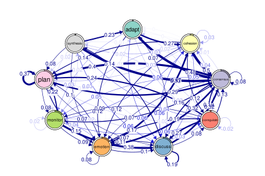
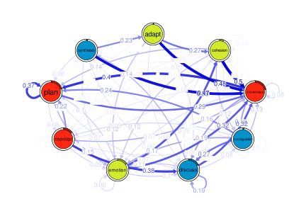
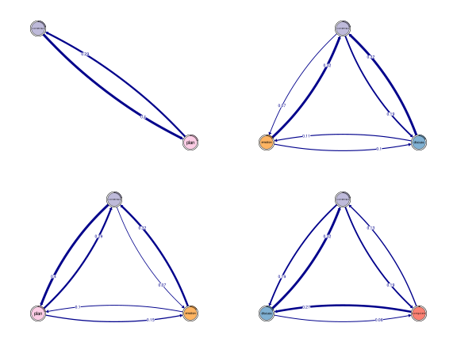

Finding cliques and communities with tna
Source:vignettes/communities_and_cliques.Rmd
communities_and_cliques.RmdThe tna package includes functionalities for finding
cliques of the transition network as well as discovering communities. We
begin by loading the package and the example data set
group_regulation.
library("tna")
#> Package 'tna' version 0.4.5
#> Please type 'citation("tna")' for citing this R package in publications
data("group_regulation", package = "tna")We fit the TNA model to the data.
tna_model <- tna(group_regulation)
print(tna_model)
#> State Labels
#>
#> adapt, cohesion, consensus, coregulate, discuss, emotion, monitor, plan, synthesis
#>
#> Transition Probability Matrix
#>
#> adapt cohesion consensus coregulate discuss emotion
#> adapt 0.0000000000 0.27308448 0.47740668 0.02161100 0.05893910 0.11984283
#> cohesion 0.0029498525 0.02713864 0.49793510 0.11917404 0.05958702 0.11563422
#> consensus 0.0047400853 0.01485227 0.08200348 0.18770738 0.18802338 0.07268131
#> coregulate 0.0162436548 0.03604061 0.13451777 0.02335025 0.27360406 0.17208122
#> discuss 0.0713743356 0.04758289 0.32118451 0.08428246 0.19488737 0.10579600
#> emotion 0.0024673951 0.32534367 0.32040888 0.03419105 0.10186817 0.07684173
#> monitor 0.0111653873 0.05582694 0.15910677 0.05792045 0.37543615 0.09071877
#> plan 0.0009745006 0.02517460 0.29040117 0.01721618 0.06789021 0.14682475
#> synthesis 0.2346625767 0.03374233 0.46625767 0.04447853 0.06288344 0.07055215
#> monitor plan synthesis
#> adapt 0.03339882 0.01571709 0.000000000
#> cohesion 0.03303835 0.14100295 0.003539823
#> consensus 0.04661084 0.39579712 0.007584137
#> coregulate 0.08629442 0.23908629 0.018781726
#> discuss 0.02227284 0.01164262 0.140976968
#> emotion 0.03630596 0.09975326 0.002819880
#> monitor 0.01814375 0.21563154 0.016050244
#> plan 0.07552379 0.37420822 0.001786584
#> synthesis 0.01226994 0.07515337 0.000000000
#>
#> Initial Probabilities
#>
#> adapt cohesion consensus coregulate discuss emotion monitor
#> 0.0115 0.0605 0.2140 0.0190 0.1755 0.1515 0.1440
#> plan synthesis
#> 0.2045 0.0195
plot(tna_model)
Next, we apply several community finding algorithms to the model (see
?communities for more details), and plot the results for
the leading_eigen algorithm.
cd <- communities(tna_model)
plot(cd, method = "leading_eigen")
Cliques can be obtained with the cliques function. Here
we look for dyads and triads by setting size = 2 and
size = 3, respectively. Finally, we plot the results.
layout(matrix(1:4, ncol = 2, byrow = TRUE))
dyads <- cliques(tna_model, size = 2, threshold = 0.2)
triads <- cliques(tna_model, size = 3, threshold = 0.05)
plot(dyads, ask = FALSE)
plot(triads, ask = FALSE)